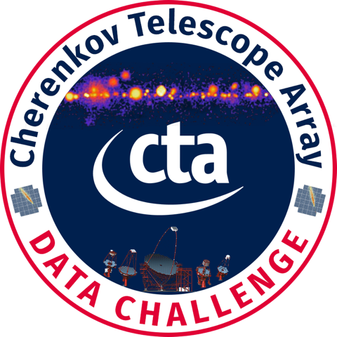

This is a fixed-text formatted version of a Jupyter notebook
- Try online

- You can contribute with your own notebooks in this GitHub repository.
- Source files: cta_1dc_introduction.ipynb | cta_1dc_introduction.py

CTA first data challenge (1DC) with Gammapy¶
Introduction¶
In 2017 and 2018, the CTA observatory did a first data challenge, called CTA DC-1, where CTA high-level data was simulated assuming a sky model and using CTA IRFs.
The main page for CTA 1DC is here: https://forge.in2p3.fr/projects/data-challenge-1-dc-1/wiki (CTA internal)
There you will find information on 1DC sky models, data access, data organisation, simulation and analysis tools, simulated observations, as well as contact information if you have any questions or comments.
This tutorial notebook¶
This notebook shows you how to get started with CTA 1DC data and what it contains.
You will learn how to use Astropy and Gammapy to:
- access event data
- access instrument response functions (IRFs)
- use index files and the
gammapy.data.DataStoreto access all data - use the observation index file to select the observations you’re interested in
- read model XML files from Python (not integrated in Gammapy yet)
This is to familiarise ourselves with the data files and to get an overview.
Further information¶
How to analyse the CTA 1DC data with Gammapy (make an image and spectrum) is shown in a second notebook cta_data_analysis.ipynb. If you prefer, you can of course just skim or skip this notebook and go straight to second one.
Notebook and Gammapy Setup¶
Before we get started, please execcute the following code cells.
The first one configures the notebooks so that plots are shown inline (if you don’t do this, separate windows will pop up). The second cell imports and checks the version of the packages we will use below. If you’re missing some packages, install them and then select “Kernel -> Restart” above to restart this notebook.
In case you’re new to Jupyter notebooks: to execute a cell, select it, then type “SHIFT” + “ENTER”.
[1]:
%matplotlib inline
import matplotlib.pyplot as plt
[2]:
import numpy as np
import astropy
import gammapy
print("numpy:", np.__version__)
print("astropy:", astropy.__version__)
print("gammapy:", gammapy.__version__)
numpy: 1.16.2
astropy: 3.1.1
gammapy: 0.12
DC-1 data¶
In this and other Gammapy tutorials we will only access a few data files from CTA DC-1 from $GAMMAPY_DATA/cta-1dc that you will have if you followed the “Getting started with Gammapy” instructions and executed gammapy download tutorials.
Information how to download more or all of the DC-1 data (in total 20 GB) is here: https://forge.in2p3.fr/projects/data-challenge-1-dc-1/wiki#Data-access
Working with that data with Gammapy is identical to what we show here, except that the recommended way to do it is to point DataStore.read at $CTADATA/index/gps or whatever dataset or files you’d like to access there.
[3]:
!echo $GAMMAPY_DATA/cta-1dc
/Users/adonath/data/gammapy-datasets/cta-1dc
[4]:
!ls $GAMMAPY_DATA/cta-1dc
README.md caldb data index make.py
Let’s have a look around at the directories and files in $GAMMAPY_DATA.
We will look at the data folder with events, the caldb folder with the IRFs and the index folder with the index files. At the end, we will also mention what the model and obs folder contains, but they aren’t used with Gammapy, at least not at the moment.
EVENT data¶
First, the EVENT data (RA, DEC, ENERGY, TIME of each photon or hadronic background event) is in the data folder, with one observation per file. The “baseline” refers to the assumed CTA array that was used to simulate the observations. The number in the filename is the observation identifier OBS_ID of the observation. Observations are ~ 30 minutes, pointing at a fixed location on the sky.
[5]:
!ls -1 $GAMMAPY_DATA/cta-1dc/data/baseline/gps
gps_baseline_110380.fits
gps_baseline_111140.fits
gps_baseline_111159.fits
gps_baseline_111630.fits
Let’s open up the first event list using the Gammapy EventList class, which contains the EVENTS table data via the table attribute as an Astropy Table object.
[6]:
from gammapy.data import EventList
path = "$GAMMAPY_DATA/cta-1dc/data/baseline/gps/gps_baseline_110380.fits"
events = EventList.read(path)
[7]:
type(events)
[7]:
gammapy.data.event_list.EventList
[8]:
type(events.table)
[8]:
astropy.table.table.Table
[9]:
# First event (using [] for "indexing")
events.table[0]
[9]:
| EVENT_ID | TIME | RA | DEC | ENERGY | DETX | DETY | MC_ID |
|---|---|---|---|---|---|---|---|
| s | deg | deg | TeV | deg | deg | ||
| uint32 | float64 | float32 | float32 | float32 | float32 | float32 | int32 |
| 1 | 664502403.0454683 | -92.63541 | -30.514854 | 0.03902182 | -0.9077294 | -0.2727693 | 2 |
[10]:
# First few events (using [] for "slicing")
events.table[:2]
[10]:
| EVENT_ID | TIME | RA | DEC | ENERGY | DETX | DETY | MC_ID |
|---|---|---|---|---|---|---|---|
| s | deg | deg | TeV | deg | deg | ||
| uint32 | float64 | float32 | float32 | float32 | float32 | float32 | int32 |
| 1 | 664502403.0454683 | -92.63541 | -30.514854 | 0.03902182 | -0.9077294 | -0.2727693 | 2 |
| 2 | 664502405.2579999 | -92.64103 | -28.262728 | 0.030796371 | 1.3443842 | -0.2838398 | 2 |
[11]:
# Event times can be accessed as Astropy Time objects
type(events.time)
[11]:
astropy.time.core.Time
[12]:
events.time[:2]
[12]:
<Time object: scale='tt' format='mjd' value=[59235.50003525 59235.50006086]>
[13]:
# Convert event time to more human-readable format
print(events.time[:2].fits)
['2021-01-21T12:00:03.045' '2021-01-21T12:00:05.258']
[14]:
# Event positions can be accessed as Astropy SkyCoord objects
print(type(events.radec))
events.radec[:2]
<class 'astropy.coordinates.sky_coordinate.SkyCoord'>
[14]:
<SkyCoord (ICRS): (ra, dec) in deg
[(267.3646 , -30.514854), (267.35898, -28.262728)]>
[15]:
events.galactic[:2]
[15]:
<SkyCoord (Galactic): (l, b) in deg
[(359.08019367, -1.52993937), ( 1.00977094, -0.36805311)]>
[16]:
# The event header information is stored
# in the `events.table.meta` dictionary
print(type(events.table.meta))
<class 'collections.OrderedDict'>
[17]:
# E.g. to get the observation pointing position in degrees:
events.table.meta["RA_PNT"], events.table.meta["DEC_PNT"]
[17]:
(267.68121338, -29.6075)
EVENT analysis example¶
As an example how to work with EVENT data, let’s look at the spatial and energy distribution of the events for a single run.
Note that EVENT data in Gammapy is just stored in an Astropy Table, which is basically a dictionary mapping column names to column data, where the column data is a Numpy array. This means you can efficienly process it from Python using any of the scientific Python tools you like (e.g. Numpy, Scipy, scikit-image, scikit-learn, …)
EVENT spatial distribution¶
To illustrate a bit how to work with EVENT table an header data, let’s plot the event positions as well as the pointing position.
[18]:
# Event positions
pos = events.galactic[::300] # sub-sample every 100th event
plt.scatter(pos.l.wrap_at("180 deg").deg, pos.b.deg, s=10)
# Pointing position
pos_pnt = events.pointing_radec.galactic
plt.scatter(
pos_pnt.l.wrap_at("180 deg").deg, pos_pnt.b.deg, marker="*", s=400, c="red"
)
plt.xlabel("Galactic longitude (deg)")
plt.ylabel("Galactic latitude (deg)")
pos_pnt
[18]:
<SkyCoord (Galactic): (l, b) in deg
(359.9999912, -1.29999594)>
EVENT energy distribution¶
Let’s have a look at the event energy distribution.
[19]:
energy = events.table["ENERGY"].data
energy_bins = np.logspace(-2, 2, num=100)
plt.hist(energy, bins=energy_bins)
plt.semilogx()
plt.xlabel("Event energy (TeV)")
plt.ylabel("Number of events");
A double-peak, at ~ 30 GeV and ~ 100 GeV? …. let’s try to find out what’s going on …
EVENT MC_ID¶
One idea could be to split the data into gamma-ray and hadronic background events. Now from looking at the FITS header, one can see that MC_ID == 1 is the hadronic background, and the other values are for different gamma-ray emission components.
[20]:
is_gamma = events.table["MC_ID"] != 1
print("Number of events: ", len(events.table))
print("Number of gammas: ", is_gamma.sum())
print("Number of hadrons: ", len(events.table) - is_gamma.sum())
Number of events: 106217
Number of gammas: 8239
Number of hadrons: 97978
[21]:
energy = events.table["ENERGY"].data
energy_bins = np.logspace(-2, 2, num=100)
opts = dict(bins=energy_bins, density=True, histtype="step")
plt.hist(energy[~is_gamma], label="hadron", **opts)
plt.hist(energy[is_gamma], label="gamma", **opts)
plt.loglog()
plt.xlabel("Event energy (TeV)")
plt.ylabel("Number of events")
plt.legend();
As expected, the energy spectra are roughly power-laws. When plotting in log-log, one can see that the spectra are roughly power-laws (as expected), and the “double peak” we saw before looks more like a “double energy threshold” pattern. It’s there for gammas and background, and below 100 GeV the signal to background ratio is lower.
What we’re seeing here is the result of a mixed-array in CTA with LSTs, MSTs and SSTs, which have different energy thresholds:
- ~ 30 GeV is the energy threshold of the LSTs
- ~ 100 GeV is the energy threshold of the MSTs
- the energy threshold of the SSTs is at a few TeV and doesn’t show up as a clear feature in the gamma and background energy distribution (probably the rise in slope in gamma in the 1-10 TeV range is due to the SSTs).
Let’s look a little deeper and also check the event offset distribution in the field of view …
EVENT FOV offset¶
The event position and offset in the field of view (FOV) can be computed from the event RA, DEC position and the observation pointing RA, DEC position.
But actually, the field of view position is stored as extra columns in the EVENT list: DETX and DETY (angles in degree, I think RA / DEC aligned field of view system).
I presume (hope) this unnecessary information will be dropped from the CTA event lists in the future to save some space (make the CTA DL3 data ~25% smaller), but for now, let’s use those columns to compute the field of view offset and look at the offset-energy distribution of the events.
[22]:
energy_bins = 10 ** np.linspace(-2, 2, 100)
offset_bins = np.arange(0, 5.5, 0.1)
t = events.table
offset = np.sqrt(t["DETX"] ** 2 + t["DETY"] ** 2)
hist = np.histogram2d(
x=t["ENERGY"], y=offset, bins=(energy_bins, offset_bins)
)[0].T
from matplotlib.colors import LogNorm
plt.pcolormesh(energy_bins, offset_bins, hist, norm=LogNorm())
plt.semilogx()
plt.colorbar()
plt.xlabel("Energy (TeV)")
plt.ylabel("Offset (deg)")
[22]:
Text(0, 0.5, 'Offset (deg)')
So the CTA field of view increases with energy in steps. The energy distribution we saw before was the combination of the energy distribution at all offsets. Even at a single offset, the double energy-threshold at ~ 30 GeV and ~ 100 GeV is present.
There is also a quick-look peek method you can use to get a peek at the contents of an event list:
[23]:
events.peek()
Stacking EVENTS tables¶
As a final example of how to work with event lists, here’s now to apply arbitrary event selections and how to stack events tables from several observations into a single event list.
We will just use astropy.table.Table directly, not go via the gammapy.data.EventList class. Note that you can always make an EventList object from a Table object via event_list = EventList(table). One point to keep in mind is that Table.read doesn’t resolve environment variables in filenames, so we’ll use the Python standard library os package to construct the filenames.
[24]:
import os
from astropy.table import Table
from astropy.table import vstack as table_vstack
filename = os.path.join(
os.environ["GAMMAPY_DATA"],
"cta-1dc/data/baseline/gps/gps_baseline_110380.fits",
)
t1 = Table.read(filename, hdu="EVENTS")
filename = os.path.join(
os.environ["GAMMAPY_DATA"],
"cta-1dc/data/baseline/gps/gps_baseline_111140.fits",
)
t2 = Table.read(filename, hdu="EVENTS")
tables = [t1, t2]
table = table_vstack(tables, metadata_conflicts="silent")
[25]:
print("Number of events: ", len(table))
Number of events: 212603
[26]:
# Let's select gamma rays with energy above 10 TeV
mask_mc_id = table["MC_ID"] != 1
mask_energy = table["ENERGY"] > 10
mask = mask_mc_id & mask_energy
table2 = table[mask]
print("Number of events after selection:", len(table2))
Number of events after selection: 215
When processing a lot or all of the 1DC events, you would write a for loop, and apply the event selection before putting the table in the list of tables, or you might run out of memory. An example is here.
That’s all for EVENTS. You now know what every column in the event table contains, and how to work with event list tables using gammapy.data.EventList and astropy.table.Table.
Just in case that there is some observation parameter in the FITS EVENTS header that you’re interested in, you can find the full description of the keys you can access via the events.table.meta dictionary here.
IRFs¶
The CTA instrument reponse functions (IRFs) are given as FITS files in the caldb folder.
Note that this is not realistic. Real CTA data at the DL3 level (what we have here, what users get) will mostly likely have per-observation or per-time interval IRFs, and the IRFs will not be stored in a separate CALDB folder, but distributed with the EVENTS (probably in the same file, or at least in the same folder, so that it’s together).
For now, the EVENT to IRF association (i.e. which IRF is the right one for given EVENTS) is done by index files. We will discuss those in the next section, but before we do, let’s look at the CTA IRFs for one given configuration: South_z20_50h.
[27]:
!(cd $GAMMAPY_DATA/cta-1dc && tree caldb)
caldb
└── data
└── cta
└── 1dc
└── bcf
└── South_z20_50h
└── irf_file.fits
5 directories, 1 file
[28]:
# Let's look at the content of one of the IRF FITS files.
# IRFs are stored in `BinTable` HDUs in a weird format
# that you don't need to care about because it's implemented in Gammapy
irf_filename = os.path.join(
os.environ["GAMMAPY_DATA"],
"cta-1dc/caldb/data/cta/1dc/bcf/South_z20_50h/irf_file.fits",
)
from astropy.io import fits
hdu_list = fits.open(irf_filename)
hdu_list.info()
Filename: /Users/adonath/data/gammapy-datasets/cta-1dc/caldb/data/cta/1dc/bcf/South_z20_50h/irf_file.fits
No. Name Ver Type Cards Dimensions Format
0 PRIMARY 1 PrimaryHDU 8 ()
1 EFFECTIVE AREA 1 BinTableHDU 53 1R x 5C [42E, 42E, 6E, 6E, 252E]
2 POINT SPREAD FUNCTION 1 BinTableHDU 70 1R x 10C [25E, 25E, 6E, 6E, 150E, 150E, 150E, 150E, 150E, 150E]
3 ENERGY DISPERSION 1 BinTableHDU 56 1R x 7C [500E, 500E, 300E, 300E, 6E, 6E, 900000E]
4 BACKGROUND 1 BinTableHDU 59 1R x 7C [36E, 36E, 36E, 36E, 21E, 21E, 27216E]
Effective area¶
The effective area is given as a 2-dim array with energy and field of view offset axes.
[29]:
from gammapy.irf import EffectiveAreaTable2D
aeff = EffectiveAreaTable2D.read(irf_filename, hdu="EFFECTIVE AREA")
[30]:
type(aeff)
[30]:
gammapy.irf.effective_area.EffectiveAreaTable2D
[31]:
type(aeff.data)
[31]:
gammapy.utils.nddata.NDDataArray
[32]:
print(aeff.data)
NDDataArray summary info
MapAxis
name : energy
unit : 'TeV'
nbins : 42
node type : edges
edges min : 1.3e-02 TeV
edges max : 2.0e+02 TeV
interp : log
MapAxis
name : offset
unit : 'deg'
nbins : 6
node type : edges
edges min : 0.0e+00 deg
edges max : 6.0e+00 deg
interp : lin
Data : size = 252, min = 0.000 m2, max = 5371581.000 m2
[33]:
aeff.peek()

[34]:
# What is the on-axis effective area at 10 TeV?
aeff.data.evaluate(energy="10 TeV", offset="0 deg").to("km2")
[34]:
[35]:
# This is how you slice out an `EffectiveAreaTable` object
# at a given field of view offset for analysis
aeff.to_effective_area_table(offset="1 deg")
[35]:
<gammapy.irf.effective_area.EffectiveAreaTable at 0x1a183f97b8>
Energy dispersion¶
Let’s have a look at the CTA energy dispersion with three axes: true energy, fov offset and migra = e_reco / e_true and has dP / dmigra as value.
Similar to the event energy distribution above, we can see the mixed-telescope array reflected in the EDISP. At low energies the events are only detected and reconstructed by the LSTs. At ~100 GeV, the MSTs take over and EDISP is chaotic in the ~ 50 GeV to 100 GeV energy range. So it can be useful to have quick access to IRFs like with Gammapy (e.g. for spectral line searches in this case), even if for 95% of science analyses users later won’t have to look at the IRFs and just trust that everything is working.
[36]:
from gammapy.irf import EnergyDispersion2D
edisp = EnergyDispersion2D.read(irf_filename, hdu="ENERGY DISPERSION")
print(type(edisp))
print(type(edisp.data))
<class 'gammapy.irf.energy_dispersion.EnergyDispersion2D'>
<class 'gammapy.utils.nddata.NDDataArray'>
[37]:
print(edisp.data)
NDDataArray summary info
MapAxis
name : e_true
unit : 'TeV'
nbins : 500
node type : edges
edges min : 5.0e-03 TeV
edges max : 5.0e+02 TeV
interp : log
MapAxis
name : migra
unit : ''
nbins : 300
node type : edges
edges min : 1.2e-38
edges max : 3.0e+00
interp : log
MapAxis
name : offset
unit : 'deg'
nbins : 6
node type : edges
edges min : 0.0e+00 deg
edges max : 6.0e+00 deg
interp : lin
Data : size = 900000, min = 0.000, max = 10595.855
[38]:
edisp.peek()

[39]:
# This is how for analysis you could slice out an `EnergyDispersion`
# object at a given offset:
edisp.to_energy_dispersion(offset="0 deg")
[39]:
<gammapy.irf.energy_dispersion.EnergyDispersion at 0x1c1c2ded30>
Point spread function¶
The point spread function (PSF) in this case is given as an analytical Gaussian model.
[40]:
from gammapy.irf import EnergyDependentMultiGaussPSF
psf = EnergyDependentMultiGaussPSF.read(
irf_filename, hdu="POINT SPREAD FUNCTION"
)
print(psf.info())
Summary PSF info
----------------
Theta : size = 6, min = 0.000 deg, max = 5.000 deg
Energy hi : size = 25, min = 0.020 TeV, max = 1258.925 TeV
Energy lo : size = 25, min = 0.013 TeV, max = 794.328 TeV
Safe energy threshold lo: 0.100 TeV
Safe energy threshold hi: 100.000 TeV
68% containment radius at theta = 0.0 deg and E = 1.0 TeV: 0.05099999 deg
68% containment radius at theta = 0.0 deg and E = 10.0 TeV: 0.03700000 deg
95% containment radius at theta = 0.0 deg and E = 1.0 TeV: 0.08269457 deg
95% containment radius at theta = 0.0 deg and E = 10.0 TeV: 0.05999410 deg
[41]:
psf.peek()
[42]:
# This is how for analysis you could slice out the PSF
# at a given field of view offset
psf.to_energy_dependent_table_psf("1 deg")
[42]:
<gammapy.irf.psf_table.EnergyDependentTablePSF at 0x1c1bd04978>
Background¶
The hadronic background for CTA DC-1 is given as a template model with an absolute rate that depends on energy, detx and dety. The coordinates detx and dety are angles in the “field of view” coordinate frame.
Note that really the background model for DC-1 and most CTA IRFs produced so far are radially symmetric, i.e. only depend on the FOV offset. The background model here was rotated to fill the FOV in a rotationally symmetric way, for no good reason.
[43]:
from gammapy.irf import Background3D
bkg = Background3D.read(irf_filename, hdu="BACKGROUND")
print(bkg)
Background3D
NDDataArray summary info
MapAxis
name : energy
unit : 'TeV'
nbins : 21
node type : edges
edges min : 1.3e-02 TeV
edges max : 2.0e+02 TeV
interp : log
MapAxis
name : fov_lon
unit : 'deg'
nbins : 36
node type : edges
edges min : -6.0e+00 deg
edges max : 6.0e+00 deg
interp : lin
MapAxis
name : fov_lat
unit : 'deg'
nbins : 36
node type : edges
edges min : -6.0e+00 deg
edges max : 6.0e+00 deg
interp : lin
Data : size = 27216, min = 0.000 1 / (MeV s sr), max = 0.421 1 / (MeV s sr)
[44]:
# TODO: implement a peek method for Background3D
# bkg.peek()
[45]:
bkg.data.evaluate(energy="3 TeV", fov_lon="1 deg", fov_lat="0 deg")
[45]:
Index files and DataStore¶
As we saw, you can access all of the CTA data using Astropy and Gammapy.
But wouldn’t it be nice if there were a better, simpler way?
Imagine what life could be like if you had a butler that knows where all the files and HDUs are, and hands you the 1DC data on a silver platter, you just have to ask for it.
Well, the butler exists. He’s called gammapy.data.DataStore and he keeps track of the data using index files.
Index files¶
The files with in the index folder with names obs-index.fits.gz and hdu-index.fits.gz are so called “observation index files” and “HDU index files”.
- The purpose of observation index files is to get a table of available observations, with the most relevant parameters commonly used for observation selection (e.g. pointing position or observation time). Their format is described in detail here.
- The purpose of HDU index files is to locate all FITS header data units (HDUs) for a given observation. At the moment, for each observation, there are six relevant HDUs: EVENTS, GTI, AEFF, EDISP, PSF and BKG. The format is described in detail here.
For 1DC there is one set of index files per simulated dataset, as well as a set of index files listing all available data in the all directory.
[46]:
!(cd $GAMMAPY_DATA/cta-1dc && tree index)
index
└── gps
├── hdu-index.fits.gz
└── obs-index.fits.gz
1 directory, 2 files
Gammapy DataStore¶
If you want to access data and IRFs from the CTA 1DC GPS dataset, just create a DataStore by pointing at a folder where the index files are located.
[47]:
from gammapy.data import DataStore
data_store = DataStore.from_dir("$GAMMAPY_DATA/cta-1dc/index/gps")
# If you want to access all CTA DC-1 data,
# set the CTADATA env var and use this:
# data_store = DataStore.from_dir("$CTADATA/index/gps")
# Or point at the directly with the index files directly
[48]:
# Print out some basic information about the available data:
data_store.info()
Data store:
HDU index table:
BASE_DIR: /Users/adonath/data/gammapy-datasets/cta-1dc/index/gps
Rows: 24
OBS_ID: 110380 -- 111630
HDU_TYPE: ['aeff', 'bkg', 'edisp', 'events', 'gti', 'psf']
HDU_CLASS: ['aeff_2d', 'bkg_3d', 'edisp_2d', 'events', 'gti', 'psf_3gauss']
Observation table:
Observatory name: 'N/A'
Number of observations: 4
[49]:
# The observation index is loaded as a table
print("Number of observations: ", len(data_store.obs_table))
print(data_store.obs_table.colnames)
# Compute and print total obs time in hours
print(data_store.obs_table["ONTIME"].sum() / 3600)
Number of observations: 4
['OBS_ID', 'RA_PNT', 'DEC_PNT', 'GLON_PNT', 'GLAT_PNT', 'ZEN_PNT', 'ALT_PNT', 'AZ_PNT', 'ONTIME', 'LIVETIME', 'DEADC', 'TSTART', 'TSTOP', 'DATE-OBS', 'TIME-OBS', 'DATE-END', 'TIME-END', 'N_TELS', 'OBJECT', 'CALDB', 'IRF', 'EVENTS_FILENAME', 'EVENT_COUNT']
2.0
[50]:
# The HDU index is loaded as a table
print(len(data_store.hdu_table))
print(data_store.hdu_table.colnames)
24
['OBS_ID', 'HDU_TYPE', 'HDU_CLASS', 'FILE_DIR', 'FILE_NAME', 'HDU_NAME']
[51]:
# Of course, you can look at the tables if you like
# data_store.obs_table[:10].show_in_browser(jsviewer=True)
# data_store.hdu_table[:10].show_in_browser(jsviewer=True)
Select observations¶
With data_store.obs_table you have a table with the most common per-observation parameters that are used for observation selection. Using Python / Table methods it’s easy to apply any selection you like, always with the goal of making a list or array of OBS_ID, which is then the input to analysis.
For the current 1DC dataset it’s pretty simple, because the only quantities useful for selection are: * pointing position * which irf (i.e. array / zenith angle)
With real data, there will be more parameters of interest, such as data quality, observation duration, zenith angle, time of observation, …
Let’s look at one example: select observations that are at offset 1 to 2 deg from the Galactic center.
[52]:
from astropy.coordinates import SkyCoord
table = data_store.obs_table
pos_obs = SkyCoord(
table["GLON_PNT"], table["GLAT_PNT"], frame="galactic", unit="deg"
)
pos_target = SkyCoord(0, 0, frame="galactic", unit="deg")
offset = pos_target.separation(pos_obs).deg
mask = (1 < offset) & (offset < 2)
table = table[mask]
print("Number of selected observations: ", len(table))
Number of selected observations: 3
[53]:
# Look at the first few
table[["OBS_ID", "GLON_PNT", "GLAT_PNT", "IRF"]][:5]
[53]:
| OBS_ID | GLON_PNT | GLAT_PNT | IRF |
|---|---|---|---|
| deg | deg | ||
| int64 | float64 | float64 | bytes13 |
| 110380 | 359.9999912037958 | -1.299995937905366 | South_z20_50h |
| 111140 | 358.4999833830074 | 1.3000020211954284 | South_z20_50h |
| 111159 | 1.5000056568267741 | 1.299940468335294 | South_z20_50h |
[54]:
# Check which IRFs were used ... it's all south and 20 deg zenith angle
set(table["IRF"])
[54]:
{'South_z20_50h'}
[55]:
# Check the pointing positions
# The grid pointing positions at GLAT = +- 1.2 deg are visible
from astropy.coordinates import Angle
plt.scatter(
Angle(table["GLON_PNT"], unit="deg").wrap_at("180 deg"), table["GLAT_PNT"]
)
plt.xlabel("Galactic longitude (deg)")
plt.ylabel("Galactic latitude (deg)")
[55]:
Text(0, 0.5, 'Galactic latitude (deg)')
Load data¶
Once you have selected the observations of interest, use the DataStore to load the data and IRF for those observations. Let’s say we’re interested in OBS_ID=110380.
[56]:
obs = data_store.obs(obs_id=110380)
[57]:
print(obs)
Info for OBS_ID = 110380
- Start time: 59235.50
- Pointing pos: RA 267.68 deg / Dec -29.61 deg
- Observation duration: 1800.0 s
- Dead-time fraction: 2.000 %
[58]:
obs.events
[58]:
<gammapy.data.event_list.EventList at 0x1c1c859f28>
[59]:
obs.events.table[:3]
[59]:
| EVENT_ID | TIME | RA | DEC | ENERGY | DETX | DETY | MC_ID |
|---|---|---|---|---|---|---|---|
| s | deg | deg | TeV | deg | deg | ||
| uint32 | float64 | float32 | float32 | float32 | float32 | float32 | int32 |
| 1 | 664502403.0454683 | -92.63541 | -30.514854 | 0.03902182 | -0.9077294 | -0.2727693 | 2 |
| 2 | 664502405.2579999 | -92.64103 | -28.262728 | 0.030796371 | 1.3443842 | -0.2838398 | 2 |
| 3 | 664502408.8205513 | -93.20372 | -28.599625 | 0.04009629 | 1.0049409 | -0.7769775 | 2 |
[60]:
obs.gti
[60]:
<gammapy.data.gti.GTI at 0x1c196a3c50>
[61]:
obs.aeff
[61]:
<gammapy.irf.effective_area.EffectiveAreaTable2D at 0x1c19a02c18>
[62]:
obs.edisp
[62]:
<gammapy.irf.energy_dispersion.EnergyDispersion2D at 0x1a183c25c0>
[63]:
obs.psf
[63]:
<gammapy.irf.psf_gauss.EnergyDependentMultiGaussPSF at 0x1c199f3940>
[64]:
obs.bkg
[64]:
<gammapy.irf.background.Background3D at 0x1a18385278>
Here’s an example how to loop over many observations and analyse them: cta_1dc_make_allsky_images.py
Model XML files¶
The 1DC sky model is distributed as a set of XML files, which in turn link to a ton of other FITS and text files.
[65]:
# TODO: copy an example XML file for tutorials
# This one is no good: $CTADATA/models/models_gps.xml
# Too large, private in CTA, loads large diffuse model
# We need to prepare something custom.
# !ls $CTADATA/models/*.xml | xargs -n 1 basename
[66]:
# This is what the XML file looks like
# !tail -n 20 $CTADATA/models/models_gps.xml
At the moment, you cannot read and write these sky model XML files with Gammapy.
There are multiple reasons why this XML serialisation format isn’t implemented in Gammapy yet (all variants of “it sucks”):
- XML is tedious to read and write for humans.
- The format is too strict in places: there are many use cases where “min”, “max”, “free” and “error” aren’t needed, so it should be possible to omit them (see e.g. dummy values above)
- The parameter “scale” is an implementation detail that very few optimisers need. There’s no reason to bother all gamma-ray astronomers with separating value and scale in model input and result files.
- The “unit” is missing. Pretty important piece of information, no? All people working on IACTs use “TeV”, why should CTA be forced to use “MeV”?
- Ad-hoc extensions that keep being added and many models can’t be put in one file (see extra ASCII and FITS files with tables or other info, e.g. pulsar models added for CTA 1DC). Admittedly complex model serialisation is an intrinsically hard problem, there is not simple and flexible solution.
Also, to be honest, I also want to say / admit:
- A model serialisation format is useful, even if it will never cover all use cases (e.g. energy-dependent morphology or an AGN with a variable spectrum, or complex FOV background models).
- The Gammapy model package isn’t well-implemented or well-developed yet.
- So far users were happy to write a few lines of Python to define a model instead of XML.
- Clearly with CTA 1DC now using the XML format there’s an important reason to support it, there is the legacy of Fermi-LAT using it and ctools using / extending it for CTA.
So what now?
- In Gammapy, we have started to implement a modeling package in
gammapy.utils.modeling, with the goal of supporting this XML format as one of the serialisation formats. It’s not very far along, will be a main focus for us, help is welcome. - In addition we would like to support a second more human-friendly model format that looks something like this
- For now, you could use Gammalib to read the XML files, or you could read them directly with Python. The Python standard library contains ElementTree and there’s xmltodict which simply hands you back the XML file contents as a Python dictionary (containing a very nested hierarchical structure of Python dict and list objects and strings and numbers.
As an example, here’s how you can read an XML sky model and access the spectral parameters of one source (the last, “Arp200” visible above in the XML printout) and create a gammapy.spectrum.models.PowerLaw object.
[67]:
# Read XML file and access spectrum parameters
# from gammapy.extern import xmltodict
# filename = os.path.join(os.environ["CTADATA"], "models/models_gps.xml")
# data = xmltodict.parse(open(filename).read())
# data = data["source_library"]["source"][-1]
# data = data["spectrum"]["parameter"]
# data
[68]:
# Create a spectral model the the right units
# from astropy import units as u
# from gammapy.spectrum.models import PowerLaw
# par_to_val = lambda par: float(par["@value"]) * float(par["@scale"])
# spec = PowerLaw(
# amplitude=par_to_val(data[0]) * u.Unit("cm-2 s-1 MeV-1"),
# index=par_to_val(data[1]),
# reference=par_to_val(data[2]) * u.Unit("MeV"),
# )
# print(spec)
Exercises¶
- Easy: Go over this notebook again, and change the data / code a little bit:
- Pick another run (any run you like)
- Plot the energy-offset histogram of the events separately for gammas and background
- Medium difficulty: Find all runs within 1 deg of the Crab nebula.
- Load the “all” index file via the
DataStore, then access the.obs_table, then get an array-valuedSkyCoordwith all the observation pointing positions. - You can get the Crab nebula position with
astropy.coordinates.SkyCoordviaSkyCoord.from_name('crab') - Note that to compute the angular separation between two
SkyCoordobjects can be computed viaseparation = coord1.separation(coord2).
- Load the “all” index file via the
- Hard: Find the PeVatrons in the 1DC data, i.e. the ~ 10 sources that are brightest at high energies (e.g. above 10 TeV).
- This is difficult, because it’s note clear how to best do this, and also because it’s time-consuming to crunch through all relevant data for any given method.
- One idea could be to go brute-force through all events, select the ones above 10 TeV and stack them all into one table. Then make an all-sky image and run a peak finder, or use an event cluster-finding method e.g. from scikit-learn.
- Another idea could be to first make a list of targets of interest, either from the CTA 1DC sky model or from gamma-cat, compute the model integral flux above 10 TeV and pick candidates that way, then run analyses.
[69]:
# start typing here ...
What next?¶
- This notebook gave you an overview of the 1DC files and showed you have to access and work with them using Gammapy.
- To see how to do analysis, i.e. make a sky image and spectrum, see cta_data_analysis.ipynb next.